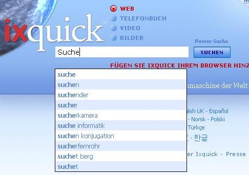

Sucheinstellungen
Der URL-generator
Speichern sie ihre einstellungen ohne cookies
Ixquick bietet Ihnen viele Funktionen zum Schutz Ihrer Privatsphäre im Internet! |
Wählen Sie Ihren Server für die Suche
|
Erklärung zu unseren Suchvorschlägen | ||
|
Q: Wie kann ich die Suchvorschläge aktivieren? A: Sie können Suchvorschläge aktivieren, indem Sie sich auf die Einstellungen-Seite begeben. Diese wird auf allen Ixquick Seiten als Link angezeigt. |  | |
|
Q: Wie funktionieren die Suchvorgänge von Ixquick? A: Wenn Sie eine Suchanfrage eingeben, wird diese in einer großen Datenbank mit den wichtigsten Ergebnisparametern abgeglichen und diverse Vorschläge werden nach Relevanz sortiert angezeigt. | ||
|
Q: Wodurch unterscheiden sich die Suchvorschläge von Ixquick von denen anderer Suchmaschinen? A: Die meisten Suchmaschinen beziehen sich bei den Suchvorschlägen auf das Suchverhalten der User. Sie erhalten also Vorschläge, die auf dem Suchverhalten anderer User beruhen. Da Ixquick ein Pionier für den Schutz der Privatsphäre im Internet ist, greifen wir nicht auf das Suchverhalten zurück. Vielmehr zeigen wir die allgemein relevanten Vorschläge zu Ihrer Suchanfrage an. | ||
|
Q: Woher stammen die Vorschläge bei Anfragen an Ixquick? A: Unsere Suchvorschläge beruhen auf einer Vielzahl von Quellen, vom Wörterbuch bis zu Websites des allgemeinen Interesses wie etwa Wikipedia. | ||
|
Q: Sind die Vorschläge in allen Sprachen verfügbar? A: Ja, die Vorschläge sind in allen Sprachen verfügbar. | ||
|
Q: Zeigt Ixquick auch bezahlte Vorschläge an? A: Nein. Die Vorschläge basieren ausschließlich auf relativer Relevanz. Werbung ist nicht inkludiert. | ||
|
Q: Ich erhalte teilweise englische Suchvorschläge, obwohl ich mich in der deutschsprachigen Version von Ixquick befinde. Warum ist das so? A: Englisch ist die Hauptsprache im Web. Ixquick liefert Suchvorschläge aber vorzugsweise in Ihrer Sprache. Wenn allerdings in Ihrer Sprache nicht ausreichend Suchvorschläge vorhanden sind, dann bieten wir ergänzend Vorschläge in englischer Sprache. Die Vorschläge in Ihrer Sprache werden selbstverständlich zuerst angezeigt. | ||
|
Q: Wird es in Zukunft personalisierte Vorschläge geben? A: Da wir zu keinem Zeitpunkt in Ihre Privatsphäre eingreifen, also auch keinerlei Daten über Ihr Suchverhalten speichern, wird es auch in Zukunft keine personalisierten Vorschläge geben. | ||
|
Q: Ich möchte nicht, dass mein Kind Vorschläge erhält, die nicht für sein Alter vorgesehen sind. Kann ich mich hier absichern? A: Selbstverständlich. Die Vorschläge richten sich nach Ihren Filtereinstellungen. Wenn diese Einstellungen entsprechend gesetzt sind, so berücksichtigt unser Algorithmus dies und zeigt keine nicht jugendfreien Vorschläge an. | ||
|
Q: Ich habe die Suchvorschläge aktiviert. Mir werden aber trotzdem keine Vorschläge gemacht. Wo könnte der Fehler sein? A: Bitte sehen Sie nach, ob Javascript in Ihrem Browser aktiviert ist. | ||
|
Q: Ich verwende keine 'Cookies', bzw. lösche ich diese regelmäßig. Kann ich die Suchvorschläge trotzdem nutzen? A: Ja, das können Sie. Da wir Ihre Privatsphäre schützen, können Sie unsere „Erzeuge eine URL”-Funktion nutzen. Diese erlaubt es Ihnen, Ihre Ergebnisse in einer URL zu speichern. Die Einstellungen können Sie auf der „Sucheinstellungen”-Seite vornehmen. |
||
Was sind „Cookies“ und verwendet Ixquick Cookies?
Ein Cookie ist ein kleines Datenpaket das auf der Festplatte Ihres Computers abgelegt wird, wenn Sie eine Website aufrufen. Ixquick verwendet nur einen Cookie mit der Bezeichnung „preferences“. Der Cookie dient dazu, sich die von Ihnen gespeicherten Sucheinstellungen für Ihren nächsten Besuch zu merken. Er verfällt, wenn Sie Ixquick 90 Tage lang nicht besucht haben, und ist anonym.